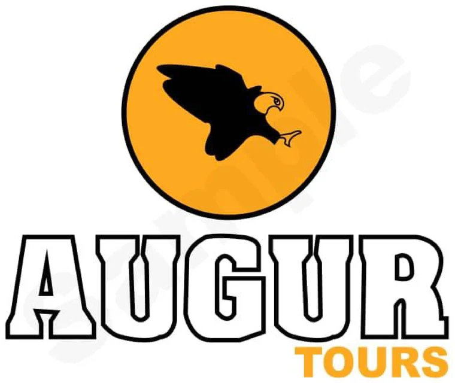

Kigali City Tours
Plan short city experiences, cultural stops, history-focused visits, food experiences, business transfers, and calm first-day arrivals.

Augur ToursEast & Central AfricaRwanda Tours
Explore Rwanda with carefully planned tours from Kigali city experiences to Volcanoes National Park gorilla trekking and scenic cross-border routes.
Tour Planning
Augur Tours can combine Rwanda with Uganda safaris, airport transfers, hotel bookings, and private transport for a complete East African journey.
Plan short city experiences, cultural stops, history-focused visits, food experiences, business transfers, and calm first-day arrivals.
Build gorilla trekking plans around permits, lodge location, transport time, guide support, and a realistic trekking schedule.
Add cultural experiences, craft stops, local markets, community visits, and storytelling-led routes for a more human itinerary.
Slow the trip down with lake stays, scenic drives, restful nights, and photography-friendly routes after trekking or city travel.
Cross-border Support
Tell us where you will start and finish. We can help think through border timing, hotel placement, private transport, gorilla trekking days, Kigali stops, and onward Uganda routes.
Trip Ideas
Airport pickup, Kigali city route, hotel booking, food stops, and onward transfer planning.
Volcanoes National Park trekking plan with lodge support, permit coordination, and private transport.
Kigali, Volcanoes, Kabale, Lake Bunyonyi, Bwindi, and Uganda safari routes in one connected plan.
Add Lake Kivu or scenic rest days after trekking, business travel, or a Uganda safari route.
Rwanda FAQ
Yes. Share your start point, end point, travel dates, and main activities so Augur can plan sensible cross-border timing and transport.
No. Permit costs and rules can change, so we confirm current permit availability and requirements before giving a final quotation.
Send your travel month, number of guests, main interests, preferred comfort level, route start and finish, and whether you need hotels or transport included.